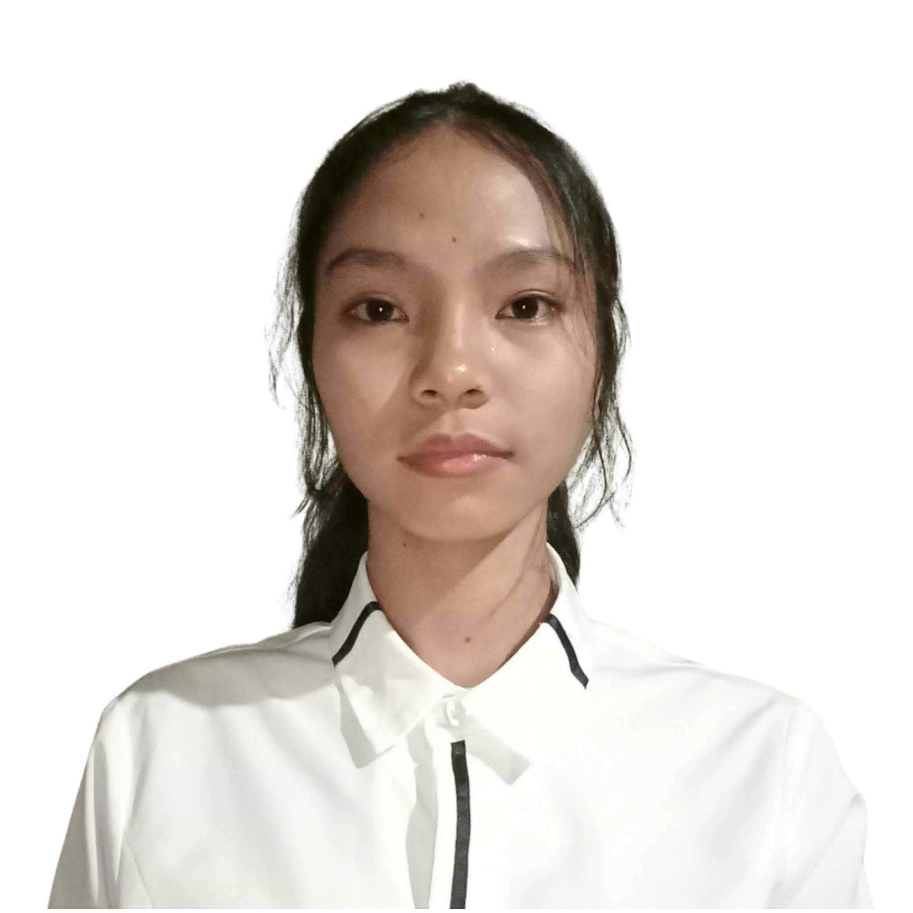

STUDENT PORTFOLIO • 2026
Four individuals. Different talents. One journey of learning and growth.
EXPLORE OUR WORLD ↓THE PEOPLE BEHIND THE PROFILES
Click a card to flip it and discover our stories.
IT STUDENT
GET TO KNOW ME
A student passionate about learning, creativity, and discovering new possibilities in technology.

IT STUDENT
GET TO KNOW ME
A student eager to explore fresh ideas, improve skills, and grow through new experiences.
IT STUDENT
GET TO KNOW ME
A student interested in technology, collaboration, and finding creative solutions.
IT STUDENT
GET TO KNOW ME
A student focused on personal growth, developing skills, and preparing for the future.
PERSONAL RESUME • 01
A motivated student interested in learning, creativity, and technology.
I am an Information Technology student who is passionate about learning and exploring different areas of technology. I am responsible, hardworking, and dedicated to improving my skills through continuous learning and hands-on experience.
Elementary Education
Binalonan North Central School SPED Center
Elementary Graduate (2013-2020)
Junior High School
Juan G. Macaraeg National High School
Junior High School Graduate (2020-2024)
Senior High School
Juan G. Macaraeg National High School
Senior High School Graduate (2024-2026)
Bachelor Of Science In Information Technology
University of Eastern Pangasinan
Currently Enrolled
LAN SETUP & CONFIGURATION • COMPUTER HARDWARE ASSEMBLY • BASIC PROGRAMMING
•NC II In Computer System Servicing - TESDA
Completing my work immersion.
PC Assembly & Troubleshooting: Built and Diagnosed multiple dekstop units for academic projects.
LAN network Setup: Design and Configure Basic Local Area Network(LAN) setup for lab testing.
✉ yasminesibayan@gmail.com | 📞 0981-032-0160 | 📌 Poblacion, Binalonan, Pangasinan
← BACK TO OUR TEAMPERSONAL RESUME • 02
A student ready to learn and grow.
I am an Information Technology student who is eager to learn, develop technical skills, and gain experience in the field of technology. I am hardworking, adaptable, and willing to take on new challenges while continuously improving my knowledge and abilities.
Elementary Education
Binalonan North Central School SPED Center
Elementary Graduate (2013-2020)
Junior High School
Juan G. Macaraeg National High School
Junior High School Graduate (2020-2024)
Senior High School
Juan G. Macaraeg National High School
Senior High School Graduate (2024-2026)
Bachelor Of Science In Information Technology
University of Eastern Pangasinan
Currently Enrolled
Photo Editing • Video Editing
•NC II In Computer System Servicing - TESDA
Computer Assembly and Disassembly – Skills in assembling, disassembling, and maintaining computer systems.
Operating System Installation – Knowledge of installing and configuring operating systems.
✉ dacilloeliza24@gmail.com | 📞 0924-140-9762 | 📌 Poblacion, Binalonan, Pangasinan
← BACK TO OUR TEAMPERSONAL RESUME • 03
A student interested in technology and innovation.
I am an Information Technology student who is willing to learn new things about technology. I am hardworking, responsible, and always ready to improve my skills and knowledge.
Elementary Education
Moreno Elementary School
Elementary Graduate (2014-2020)
Junior High School
Juan G. Macaraeg National High School
Junior High School Graduate (2020-2024)
Senior High School
Juan G. Macaraeg National High School
Senior High School Graduate (2024-2026)
Bachelor Of Science In Information Technology
University of Eastern Pangasinan
Currently Enrolled
• Emotional Intelligence • Time Management • Teamworki • Adaptability • Attention to Detail
• Cleaning Aircon
• Gained experience and learned how to properly maintain and clean air conditioning unita
Successfully completed my work immersion
Learned new skills and became more responsible.
✉ markharveylozano32@gmail.com | 📞 0953-436-9881| 📌 Moreno, Binalonan, Pangasinan
← BACK TO OUR TEAMPERSONAL RESUME • 04
A student focused on growth and future goals.
Hello my name is Kurt Steven, I am an IT student who wants to learn more about computers, coding, and technology. I am willing to improve my skills, learn new things, and gain more knowledge that will help me in my future career.
Elementary Education
Dilan, Pozorrubio Pangasinan
Elementary Graduate (2010-2017)
Junior High School
JSt. Philomenas Academy
Junior High School Graduate (2018-2022)
Senior High School
PHINMA-University of Pangasinan
Senior High School Graduate (2023-2025)
Bachelor Of Science In Information Technology
University of Eastern Pangasinan
Currently Enrolled
Time Management, Adaptability, Multi tasking, Working Hard.
•Basic Computer Programming Training
•Introduction to Information Technology
Completing my work immersion.
I learned more skills and knowledge.
✉ kurtstevenramos021207@gmail.com| 📞 0949-595-0542 | 📌 Dilan, Pozorrubio, Pangasinan
← BACK TO OUR TEAM